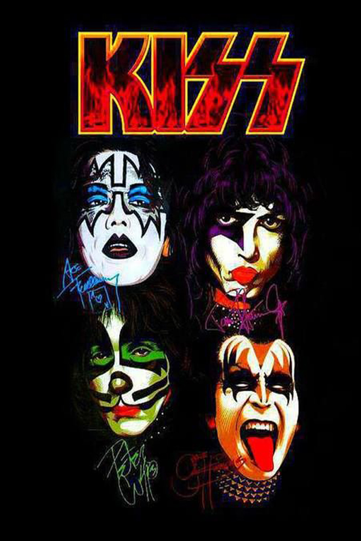
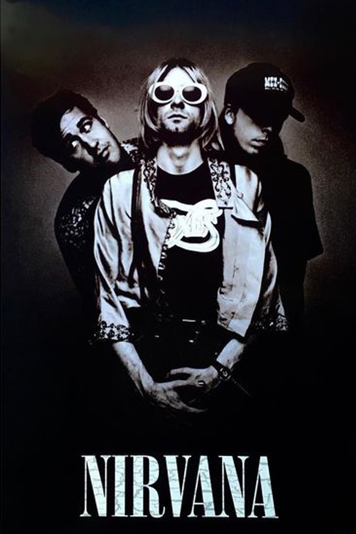
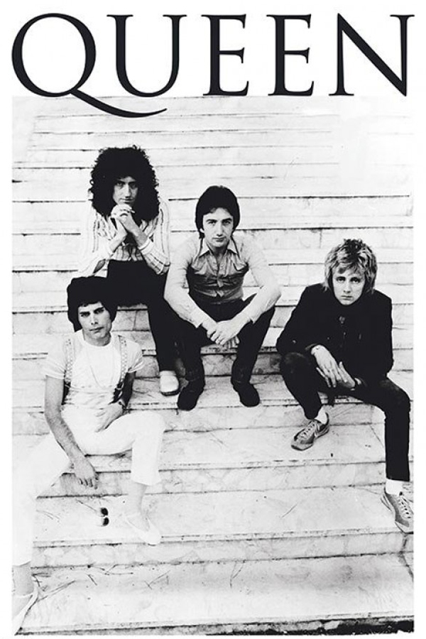
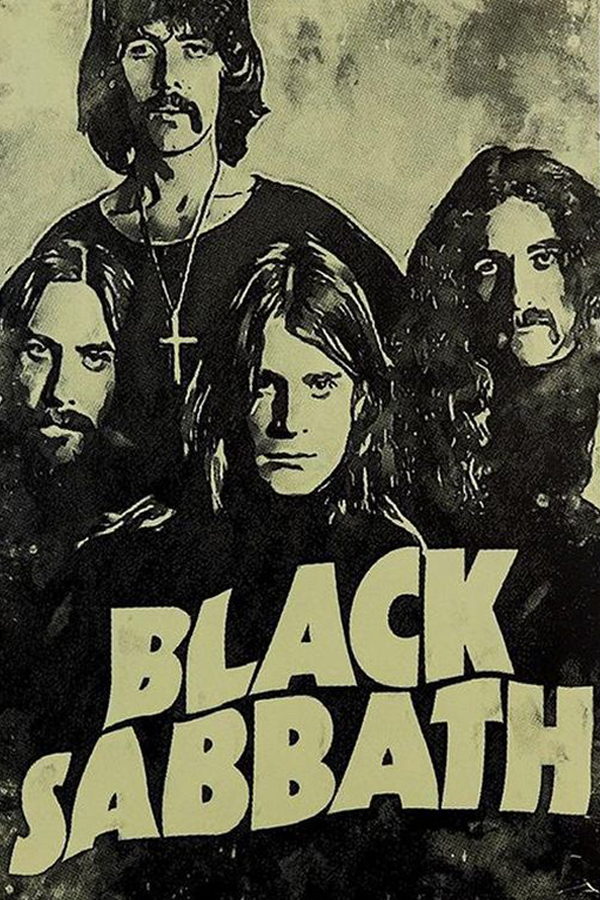
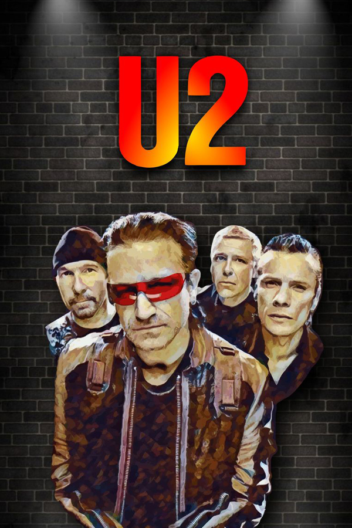
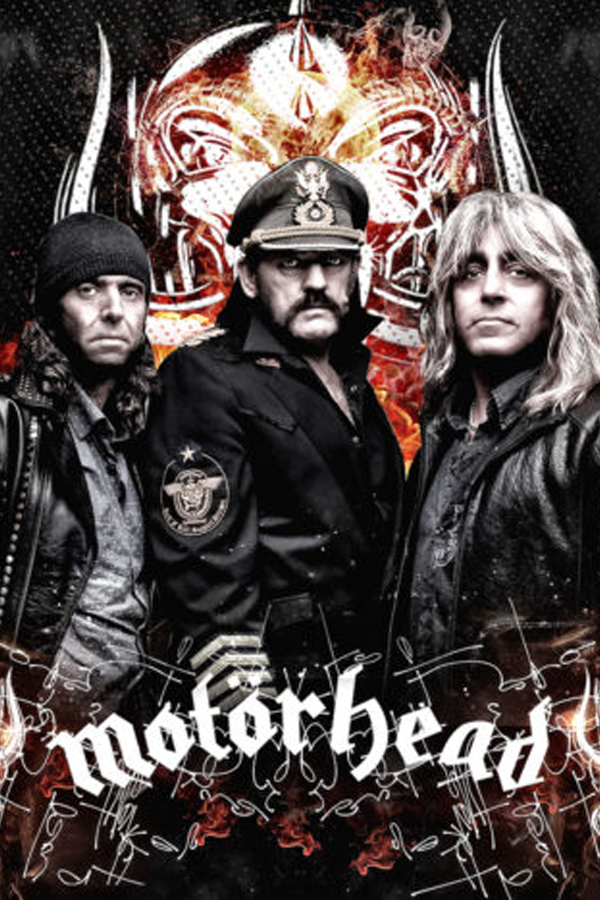
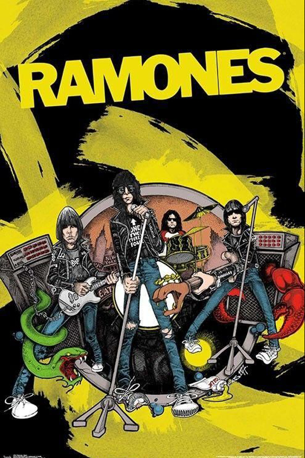
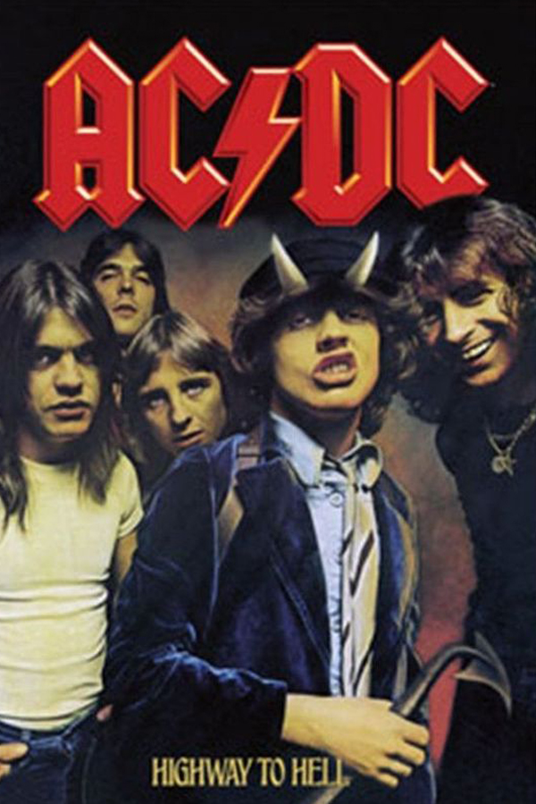

AEROSMITH
A banda foi formada em Boston, em Massachusetts, em 1970. O guitarrista Joe Perry e baixista Tom Hamilton, originalmente integrantes de uma banda chamada Jam Band, se encontraram com o vocalista Steven Tyler, o baterista Joey Kramer e o guitarrista Ray Tabano e formaram o Aerosmith. Em 1971, Tabano foi substituído por Brad Whitford, e a banda começou a atrair seguidores em Boston.









